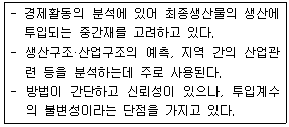
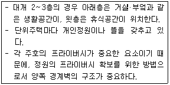
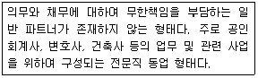
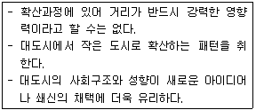
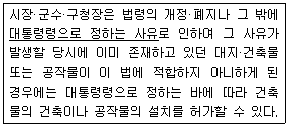
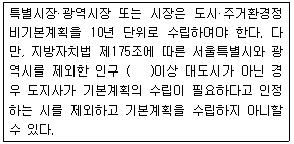

도시계획기사 (2009-05-10 기출문제)
1과목: 도시계획론
1. 다음 중 집단생잔법에 대한 설명에 해당하는 것은?
- 기준년도의 인구와 출생률, 사망률, 인구이동 등의 변화요인을 고려하여 장래인구를 예측한다.
- 과거의 일정기간에 나타난 실제 인구의 변화 자료에 복리이율방식을 적용하여 장래인구를 예측한다.
- 경제적 압출요인과 흡인요인이 도시인구를 변화시키는 요소라고 가정하고 이들 간의 관계를 방정식으로 표현하여 장래인구를 예측한다.
- 장래 산업개발계획을 바탕으로 업종별 취업인구의 예측 결과를 바탕으로 총인구를 예측한다.
(정답률: 알수없음)

2. 다음 지리정보시스템(GIS)에 관한 설명이 옳지 않은 것은?
- 지리·공간적 정보 및 자료를 체계적으로 저장, 검색, 변형, 분석하여 사용자에게 유용한 정보를 제공한다.
- GIS에 의한 분석은 자료의 질과 사용자의 분석능력에 영향을 적게 받아 결과의 정확도나 가치가 보장된다.
- 주요 기능으로는 자료의 수집, 예비적 처리, 자료의 관리, 자료의 변환 및 분석, 결과물 제작 등이 있다.
- GIS는 환경자원 관리 및 분석, 시설물 관리, 입지분석 등 매우 광범위한 분야에서 활용되고 있다.
(정답률: 알수없음)
3. 다음 도시조사에 이용되는 회귀모형에 대한 설명 중 옳지 않은 것은?
- 단순선형회귀분석이란 하나의 종속변수와 하나의 독립변수 사이의 관계를 추정하는 분석이다.
- 다중회귀분석이란 하나의 종속변수와 여러 개의 독립변수 사이의 관계를 추정하는 분석이다.
- 회귀계수는 추정하려는 독립변수의 파라메타를 뜻하며, 일반적으로 최소 제곱법에 의하여 회귀계수를 추정한다.
- 추정된 회귀선이 표본자료를 얼마나 잘 설명하는가를 나타내는 통계량을 상관계수라고 하며, R2로 표시한다.
(정답률: 알수없음)
4. 시가지 확산, 환경의 퇴락, 농토와 임야의 감소 등 당면한 도시문제를 개선하기 위하여 제시된 도시개발 패러다임인 뉴어바니즘(New Urbanism)의 원칙과 가장 거리가 먼 것은?
- 근린주구는 용도와 인구에 있어서 다양하여야 한다.
- 커뮤니티 설계에 있어서 자동차 뿐만 아니라 보행자와 대중교통도 중요하게 다루어야 한다.
- 가정, 직장, 상업·여가시설 등의 도시생활에 필요한 요소들을 콤팩트하게 구성한다.
- 해당지역의 경제적·사회적·환경적 상태를 지속적으로 개선하여 기존 도심의 재활성화를 도모한다.
(정답률: 알수없음)
5. 다음 중 국토의 계획 및 이용에 관한 법률에 따라 도시기본계획의 정책 방향에 포함되어야 할 사항으로 거리가 먼 것은?
- 환경의 보전 및 관리에 관한 사항
- 토지의 용도별 수요 및 공급에 관한 사항
- 공간구조, 생활권의 설정 및 인구의 배분에 관한 사항
- 용도지역·용도지구의 지정·변경에 관한 사항
(정답률: 알수없음)
6. 어느 도시의 상업용지 이용인구는 200,000명, 건물 평균 층수는 4층, 이용인구 1인당 평균 상면적은 15m2, 건폐율은 70%, 공공용지율은 30%일 경우 상업용지면적은?
- 약 107.14 ha
- 약 153.06 ha
- 약 221.06 ha
- 약 357.14 ha
(정답률: 알수없음)
7. 다음 중 토지이용계획의 수립을 위한 토지이용현황조사의 범위와 항목의 연결이 가장 바람직하지 않은 것은?
- 토지이용현황: 안정성, 보건성, 쾌적성
- 상위계획 및 관련계획: 상위계획, 기존계획, 관련계획
- 자연환경 조사: 기후 및 기상, 지형 및 지세
- 사회·경제 환경 조사: 인구규모, 산업구성, 자원조사
(정답률: 알수없음)
8. 다음 중 현대적 도시문제에 대한 설명으로 옳지 않은 것은?
- 대도시로의 급격한 인구집중과 도시성장은 오늘날의 도시문제를 유발한 원인이 되었다.
- 도시의 성장이나 쇠퇴로 인해 나타나는 도시문제들은 전체 시민보다 일부 계층에 한정적으로 영향을 미친다.
- 도시의 과밀화로 인해 주택부족, 교통문제, 공공시설과 생활편의시설의 부족 등의 문제가 나타난다.
- 현대도시는 사회·문화·경제 뿐 아니라 물리적으로도 주변 도시들과 상호 긴밀하게 연관되어 있는 복합적 유기체이다.
(정답률: 알수없음)
9. 도시경제분석 방법 중 아래의 설명에 해당하는 것은?

- 투입산출모형
- 변이-할당분석모형
- 입지상모형
- 지수곡선모형
(정답률: 알수없음)
10. 다음 중 국토계획의 개념에 대한 설명이 옳지 않은 것은?
- 전 국토를 대상으로 국토를 균형 있게 발전시키고 국민의 삶의 질을 개선시키고자 하는 공간계획이다.
- 각 지방정부가 계획수립의 주체가 되는 계획이다.
- 국토의 공간구성과 관련 있는 모든 분야가 망라되는 종합계획이다.
- 하위계획과 구체적인 집행계획에 지침을 제시하는 지침 제시적 계획이다.
(정답률: 알수없음)
11. 인구의 규모, 분포, 구조, 그리고 주택의 특성을 파악하기 위해 실시하는 우리나라 인구주택 총 조사의 실시 주기는?
- 2년
- 5년
- 7년
- 10년
(정답률: 알수없음)
12. 다음 중 용도지역으로서 관리지역에 포함되지 않는 것은?
- 보전관리지역
- 시설관리지역
- 생산관리지역
- 계획관리지역
(정답률: 알수없음)
13. 다음 중 개발도상국에서 흔히 나타나는 도시화의 모습과 가장 관련이 적은 것은?
- 가도시화
- 탈도시화
- 종주도시화
- 과잉도시화
(정답률: 알수없음)
14. 다음의 계획이론 중 복합적 요소로 형성된 도시를 전적으로 계획가에게 맡겨두기보다 계획가와 주민들(피계획가) 간의 상호관계를 중요사항과 동시에 인간주의적 가치에 중점을 두고 있는 것은?
- 옹호적 계획
- 교류적 계획
- 선택적 계획
- 점진적 계획
(정답률: 알수없음)
15. 도시공간구조 이론 중 해리스와 울만이 제시한 다핵심구조 이론(multiple-nuclei theory)에서의 기능지역에 해당하지 않는 것은?
- 도시교통시설지역
- CBD
- 중공업지역
- 교외주거지역
(정답률: 알수없음)
16. 다음 중 도시공원 및 녹지 등에 관한 법률과 동법 시행 규칙에 따른 주제공원의 분류에 속하지 않는 것은?
- 도시자연공원
- 묘지공원
- 문화공원
- 수변공원
(정답률: 알수없음)
17. 정비기반시설은 양호하나 노후·불량건축물이 밀집한 지역에서 주거환경을 개선하기 위하여 시행하는 정비사업은?
- 주거환경개선사업
- 주택재개발사업
- 주택재건축사업
- 도시환경정비사업
(정답률: 알수없음)
18. 다음 고대 그리스 도시국가의 성격에 관한 설명으로 옳지 않은 것은?
- 아테네를 제외한 대부분의 폴리스는 소규모의 성벽에 의해 도시부와 전원부로 구분되는 형태를 취하였다.
- 도시 형태는 원칙적으로 정방형이거나 직사각형이며, 카르도와 데쿠마누스가 격자구조 가로망의 기초이었다.
- 시가지 내에는 아고라(Agora)라고 부르는 광장이 있어 정치 및 교역활동과 같은 다양한 용도로 사용되었다.
- 밀레투스, 비잔티움, 시라쿠사, 네아폴리스, 알렉산드리아는 대표적인 그리스의 식민도시다.
(정답률: 알수없음)
19. 토지이용계획 중 도시 내 녹지지역의 배치를 위한 기본원칙으로 가장 알맞지 않은 것은?
- 다른 용도지역 중 녹지지역을 최우선적으로 배치한다.
- 생태적 현상에 위배되지 않도록 배치한다.
- 이용이 용이한 거리 내에 배치한다.
- 도시 시설과 공간적 융합을 이루도록 배치한다.
(정답률: 알수없음)
20. 인구규모를 기준으로 한 독시아디스(C. A, Doxiadis)의 인간정주사회 단계에 속하는 것은?
- 행정도시(politipolis)
- 세계도시(ecumenopolis)
- 부심도시(subpolis)
- 다핵도시(multipolis)
(정답률: 알수없음)
2과목: 도시설계 및 단지계획
21. 다음 중 아래와 같은 특징을 갖는 주택유형은?

- 연립주택
- 다세대주택
- 중정형주택
- 타운하우스
(정답률: 알수없음)
22. 제2종 지구단위계획의 주요 지침 내용 중 당해 구역의 중심기능에 따른 구분과 관련하여 주거형 지구단위계획 구역으로 지칭할 수 있는 요건에 해당되지 않는 것은?
- 주민의 집단적 생활근거지로 이용되고 있는 지역으로, 도로, 상하수도 등 기반시설이 부족하여 이에 따른 정비가 필요한 지역
- 주민의 집단적 생활근거지로 이용되고 있는 지역으로, 주택이 소규모로 연담화하여 건설되어 있거나 건설되고 있는 지역
- 주민의 집단적 생활근거지로 이용되고 있는 지역으로, 토지이용 현황 및 추이를 감안할 때 향후 5년 내 개발수요가 크게 증가할 것으로 예상되는 지역
- 주민의 집단적 생활근거지로 이용될 지역으로서 공유 수면매립과 같은 공공사업의 시행으로 이주단지를 조성할 필요가 있는 지역
(정답률: 알수없음)
23. 다음 중 건축물 계획과 관련한 용어의 정의가 옳은 것은?
- 벽면한계선: 건축물 특정층의 외벽면이 계획에서 정한 선의 수직면에 일정 비율 이상 접해야 하는 것을 말한다.
- 건축지정선: 건축물의 특정층이 계획에서 정한 선의 수직면을 넘어 돌출하여 건축할 수 없다.
- 벽면지정선: 건축물의 외벽면이 계획에서 정한 선의 수직면에 일정 비율 이상 접해야 하는 것을 말한다.
- 건축한계선: 건축물(부대시설 포함) 지상부의 외벽면이 계획에서 정한 선의 수직면을 넘어 돌출하여 건축할 수 없다.
(정답률: 알수없음)
24. 다음 중 제1종 지구단위계획의 지정 대상이 아닌 곳은?
- 주택법에 의한 대지조성사업지구
- 관광진흥법에 의하여 지정된 관광특구
- 택지개발촉진법에 의한 택지개발예정지구
- 국토의 계획 및 이용에 관한 법률에 의하여 지정된 도시자연공원구역
(정답률: 알수없음)
25. 다음 중 보행자 공간의 역할과 거리가 먼 내용은?
- 쾌적한 보행자 공간의 조성을 통해 연도상가의 환경을 개선시킬 수 있다.
- 안락하고 편리한 보행자 공간을 이용하여 보행자들이 목적지까지 편리하게 도달할 수 있게 한다.
- 산책, 놀이, 대화 등의 생활공간으로 활용될 수 있다.
- 특정 주택단지의 정체성을 높여 저소득 계층과의 구분이 가능하도록 해 준다.
(정답률: 알수없음)
26. 단독주택의 획지규모를 결정하는 요인이 아닌 것은?
- 모든 계층의 고밀도 주택구입 수요전망에 의한 규모
- 법적 규제 사항
- 건전한 사회구조의 구성을 위해 요구되는 주택규모
- 가구원수와 가구 유형에 따른 쾌적한 주거 수준
(정답률: 알수없음)
27. 다음 중 주택건설기준에 관한 규정에 따른 주택단지 안의 도로설치 기준이 옳은 것은?
- 단지안의 도로로부터 건축물까지의 출입로의 폭은 당해 건축물 주출입구의 폭 이상으로 하여야 한다.
- 해당도로를 이용하는 공동주택의 세대수가 100세대 미만이고 막다른 도로로서 그 길이가 35m 미만인 때는 그 폭을 3m 이상으로 할 수 있다.
- 주택단지안의 폭 12m 이상인 도로에는 폭 1.5m 이상의 보도를 설치하여야 한다.
- 공동주택을 건설하는 주택단지에는 폭 6m 이상의 도로를 설치하여야 한다.
(정답률: 알수없음)
28. 도시공원의 기능에 따른 분류 중 생활권공원의 하나인 어린이공원의 최소 설치 규모 기준은?
- 3,000m2 이상
- 2,000m2 이상
- 1,500m2 이상
- 1,000m2 이상
(정답률: 알수없음)
29. 다음 중 부케난보고서(Buchanan Report)와 관계있는 것은?
- 슈퍼블럭
- 거주환경지역
- 보행자데크
- 획지분할
(정답률: 알수없음)
30. 다음 중 법률상 지구단위계획의 정의와 맞지 않는 내용은?
- 지구단위계획은 토지이용을 합리화하고 그 기능을 증진시키기 위해 수립한다.
- 지구단위계획은 도시의 미관을 개선하고 양호한 환경을 확보하기 위해 수립한다.
- 지구단위계획은 우수한 교통환경을 제공하여 민간부문의 경제성 향상을 도모하기 위해 수립한다.
- 지구단위계획은 당해 지역을 체계적·계획적으로 관리하기 위해 수립하는 도시관리계획이다.
(정답률: 알수없음)
31. 다음 중 복합용도개발(Mixed Use Development)의 장점에 대한 설명으로 옳지 않은 것은?
- 도심지에 주거기능을 도입함으로써 도심공동화를 방지하고 도시에 활력소를 불어넣을 수 있다.
- 직주근접(職住近接)을 실현함으로써 교통혼잡에 따른 사회적 비용을 줄일 수 있다.
- 도심지역 중 저밀도로 이용되고 있는 지역을 재개발함으로써 토지이용의 효율성을 제고할 수 있다.
- 동일 건물 내에서 주거기능의 보호를 위한 별도의 완충 공간이나 진·출입 동선의 분리 등이 불필요하여 환경계획의 단순화가 가능하다.
(정답률: 알수없음)
32. 다음 중 슈퍼블럭에 관한 설명으로 옳지 않은 것은?
- 1960년대 이후 영국의 주택이론가들에 의해 창안되었다.
- 충분한 공동의 오픈스페이스를 확보할 수 있다.
- 불필요한 도로의 면적을 줄이고 보차 분리가 가능하다.
- 대형 건물, 집합주택을 배치하기에 적당하다.
(정답률: 알수없음)
33. 다음의 국지도로 유형 중 부정형한 지형에 적용이 용이한 편이며 통과교통이 차단되어 보행의 안전성과 주거환경의 쾌적성을 확보할 수 있으나, 개별 획지로의 접근성은 다소 불리한 것은?
- 격자형 도로
- T자형 도로
- 쿨데삭형 도로
- S자형 도로
(정답률: 알수없음)
34. 다음 중 단독주택 또는 연립주택과 비교하여 아파트 형식의 주택이 갖는 장점이 아닌 것은?
- 주거지의 고밀화가 가능하다.
- 프라이버시 확보와 개성있는 외관 형성이 용이하다.
- 공동의 오픈스페이스 확보와 커뮤니티 형성에 유리하다.
- 공동설비로 공사비를 절감할 수 있다.
(정답률: 알수없음)
35. 축척이 1/50,000 인 지형도 위에 20m 간격으로 등고선이 그려져 있고, 5줄마다 계곡선이 들어있다. 어떤 사면의 경사를 알기 위해 계곡선 간의 수평거리를 재어 본 결과 1.2cm 이었을 때 이 사면의 경사도는?
- 약 9%
- 약 12%
- 약 17%
- 약 20%
(정답률: 알수없음)
36. 캐빈린치(Kevin Lynch)가 주장한 도시경관 이미지의 구성요소에 해당하지 않는 것은?
- 연접부(edge)
- 결절점(node)
- 지구(district)
- 광경(landscape)
(정답률: 알수없음)
37. 주택건설기준 등에 관한 규정상 방음시설을 설치하여야 하는 공동주택을 건설하는 지점의 소음도(실외소음도) 기준은?
- 75dB 이상
- 65dB 이상
- 55dB 이상
- 45dB 이상
(정답률: 알수없음)
38. 주택건설기준 등에 관한 규정한 도로 및 주차장의 경계선으로부터 공동주택의 외벽까지는 최소 얼마 이상을 띄워야 하는가?
- 2m
- 3m
- 5m
- 10m
(정답률: 알수없음)
39. 보행자도로와 차도를 동일한 공간에 설치하고 보행자의 안전성을 향상하는 동시에 주거환경을 개선하기 위하여 차량통행을 억제하는 여러가지 기법을 도입하는 방식은?
- 보차혼용방식
- 보차병행방식
- 보차분리방식
- 보차공존방식
(정답률: 알수없음)
40. 순인구밀도가 250인/ha이고 주택용지율이 70% 일 때, 총인구밀도는?
- 1⑤인/ha
- 175인/ha
- 265인/ha
- 3⑤인/ha
(정답률: 알수없음)
3과목: 도시개발론
41. 기업의 타당성 분석(사업성 분석) 중 개발사업의 연차별 투자비용을 추정하는 단계에서 비용을 크게 직접비와 간접비로 나누어 사업비용을 추정할 때, 다음 중 직접비에 해당하는 것은?
- 용지비
- 판매비
- 일반관리비
- 금융비용
(정답률: 알수없음)
42. 다음의 역사보존도시에 관한 설명 중 옳지 않은 것은?
- 역사보존도시는 개성적인 역사환경을 통해 도시에 다양성을 부여한다.
- 역사환경은 도시 내 중요한 문화 창조의 자원이며 도시 활성화의 자원으로 활용이 가능하다.
- 역사보존도시의 전통적 기반 보존을 통해 다른 도시와의 차별성을 부각할 수 있다.
- 역사보존도시는 과거의 역사와 현재의 조화보다는 과거의 역사환경보존에 더 중심을 두어야 한다.
(정답률: 알수없음)
43. 상업적·공공적인 목적을 위해 지상 공간의 하부에 자연적으로 형성되어있던 공간의 개발이나 인위적인 굴착을 통해 생성한 공간을 무엇이라 하는가?
- 지하공간
- 녹지
- 오픈스페이스
- 주차장
(정답률: 알수없음)
44. 다음 중 역세권에 대한 설명이 옳지 않은 것은?
- 역세권이란 좁은 의미로 역사로부터 타 교통수단에 의존하지 않고 도보로 도달할 수 있는 지역을 뜻한다.
- 역세권은 역사를 중심으로 작은 지역을 이룰 수 있는 공간으로, 도시민들에게 서비스나 편의를 제공한다.
- 최근에는 역을 중심으로 한 복합적 토지이용을 지양하고 수송의 역할에 충실한 역세권을 개발하려고 한다.
- 역세권은 기차의 정착에 따라 종착역세권, 환승역세권, 통과역세권으로 나누어 볼 수 있다.
(정답률: 알수없음)
45. 다음 Berg가 제안한 도시화의 단계 중 교통여건의 개선, 주거환경의 질적 수준 개선 등의 도시개발 또는 도시재생사업을 통해 중심도시의 활성화를 도모하는 단계는?
- 도시화단계(stage of urbanization)
- 교외화단계(stage of suburbanization)
- 반도시화단계(stage of deurbanization)
- 재도시화단계(stage of reurbanization)
(정답률: 알수없음)
46. 다음 중 입찰지대(bid-rent)에 대한 설명으로 가장 적절하지 못한 것은?
- 입찰지대가 높은 곳은 일반적으로 개발 밀도가 높다.
- 입찰지대는 중심지가 가장 높고 외곽으로 갈수록 낮아진다.
- 입찰지대는 동심원이론을 설명하는 경제학적 토대가 된다.
- 입찰지대가 가장 낮은 곳은 일반적으로 상업용 토지로 이용된다.
(정답률: 알수없음)
47. 압축도시(Compact City)에 대한 설명이 옳지 않은 것은?
- 도시의 과도한 교외 확산을 억제해야 한다.
- 토지이용은 복합이용(mixed land use)을 추구해야 한다.
- 압축도시의 핵심 개념은 직주분리다.
- 환경보전과 도시개발의 관계 속에서 적정 개발밀도를 도출하는 것이 필요하다.
(정답률: 알수없음)
48. 도시개발사업의 타당성 분석에 관한 설명으로 옳지 않은 것은?
- 타당성 분석은 해당 프로젝트 시행 이전에 사전적으로 이루어지는 것이 일반적이다.
- 사업성 분석에서의 기본은 평가지표, 프로젝트의 비용과 수입의 추정이다.
- 프로젝트의 경제성 평가지표로는 비용-편익비(B/C ratio), 현재가치 순편익(PVNB), 내부수익률(IRR) 등이 있다.
- 사업성 및 경제성 분석으로 수출기반모형과 다지역 투입산출모형이 이용된다.
(정답률: 알수없음)
49. 도시 마케팅의 구성요소 중 고객으로 간주하기 힘든 것은?
- 투자기업
- 관광객 및 방문객
- 경쟁도시
- 주민
(정답률: 알수없음)
50. 다음 중 재건축사업을 위한 정비계획을 수립할 수 있는 해당지역 조건이 아닌 것은?
- 기존의 공동주택 건축물의 일부가 멸실되어 붕괴나 그 밖의 안전사고에 대한 우려가 있어 이를 재건축하고자 하는 지역
- 기존의 공동주택들이 재해가 발생할 경우 위해의 우려가 있어 신속히 정비사업을 추진하여야 하는 지역
- 노후·불량건축물이 지역 안 건축물 수의 2분의 1이상이고, 준공 후 15년이 경과한 공동주택을 재건축하고자 하는 지역
- 단독주택이 200호 이상이지만, 당해 지역 안에 있는 건축물수의 3분의 2이상이 노후·불량건축물인 기존의 단독주택을 재건축하고자 하는 지역
(정답률: 알수없음)
51. 프로젝트를 기업 측면이 아니라 사회적 측면에서 평가하는 것으로, 분석의 대상이 일반적으로 공공투자사업이나 정책이 되는 타당성 분석은?
- 경제적 타당성 분석
- 재무적 타당성 분석
- 파급효과 분석
- 행정적 타당성 분석
(정답률: 알수없음)
52. 도시 및 주거환경정비법에서 규정하고 있는 정비사업의 시행주체가 될 수 없는 자는?
- 토지소유자
- 시장·군수
- 대한주택공사
- 국가(중앙정부)
(정답률: 알수없음)
53. 도시개발사업의 시행방식 중 수용 또는 사용방식이 다른 방식에 비하여 갖는 특징에 대한 설명이 옳지 않은 것은?
- 초기투자비가 막대한 편이다.
- 이주대책을 마련하는 데에 어려움이 따를 수 있다.
- 사업기간이 상대적으로 많이 걸린다.
- 전면매수에 따른 토지주의 반발이 많아질 수 있다.
(정답률: 알수없음)
54. 개발권양도제(TDR)의 목적이라고 할 수 없는 것은?
- 납세자 보호
- 역사적 건축물 보호
- 과밀지역의 개발 제한
- 사업의 인프라비용 절감
(정답률: 알수없음)
55. 영국에서 도시재개발이 제도적으로 정착하게 된 것은 어떠한 법령의 제정에 의한 것인가?
- 내부시가지정비법
- 그린우드주택법
- 도심재개발법
- 도크랜드주택법
(정답률: 알수없음)
56. 우리나라의 도시개발을 크게 도시계획사업과 비도시계획사업으로 구분할 때, 다음 중 비도시계획사업의 종류가 아닌 것은?
- 택지개발촉진법에 의한 택지개발사업
- 지역균형개발 및 지방중소기업 육성에 관한 법률에 의한 개발촉진지구개발사업
- 주택법에 의한 대지조성사업
- 도시 및 주거환경정비법에 의한 도시환경정비사업
(정답률: 알수없음)
57. 소비자가 주어진 상업시설을 이용할 확률은 상업시설의 크기에 비례하고 이동하는 시간에 반비례한다는 개념을 적용한 개별 소매점의 고객흡입력을 계산하는 상권분석 모형은?
- 회귀모형
- Huff모형
- 인과분석모형
- 시계열모형
(정답률: 알수없음)
58. 부동산신탁의 종류 중 임대형 토지신탁과 분양형 토지신탁이 속하는 신탁의 종류는?
- 관리형 신탁
- 운용형 신탁
- 처분형 신탁
- 관리·처분형 신탁
(정답률: 알수없음)
59. 다음 중 수출기반모형(Export Base Model)에 대한 설명이 옳지 않은 것은?
- 국가간 교역을 위주로 한 개방된 경제체제에서도 성립될 수 있는 모형이다.
- 지역과 전국간 동일한 노동 생산성이 전제되어야 한다.
- 지역에서 생산된 제품에 대한 지역 외부의 수요가 지역경제의 성장을 유도한다는 전제를 바탕으로 한다.
- 수출기반모형으로 정책의 효과를 분석하기 위해서는 정책의 효과를 지역에서 생산되는 산업별 제품에 대한 지역외부의 수요변화로 나타내어야 한다.
(정답률: 알수없음)
60. 단일 또는 소수의 프로젝트를 신디케이트하는 경우 또는 부동산 사업에 자본을 모집하기 위한 수단으로 파트너십(partnership)의 형태가 많이 활용되고 있다. 다음은 어떤 형태의 파트너십을 설명하고 있는가?

- 일반 파트너십(General Partnership)
- 일반책임 파트너십(General Liability Partnership)
- 유한 파트너십(Limited Partnership)
- 유한책임 파트너십(Limited Liability Partnership)
(정답률: 알수없음)
4과목: 국토 및 지역계획
61. 영국에서는 1930년대 이후 지역개발과 계획의 이론 및 정책적 연구가 활발히 이루어졌다. 이러한 지역계획에 많은 영향을 미친 보고서와 주요내용이 올바르게 연결된 것은?
- 바로우보고서(Barlow Report): 공업 재배치
- 아스와트보고서(Uthwatt Report): 농촌의 토지이용
- 스코트보고서(Scott Report): 개발이익환수
- 하워드보고서(Howard Report): 미래의 전원도시
(정답률: 알수없음)
62. 다음 중 수도권정비계획법에 의하여 수도권의 과밀을 해소하기 위한 목적으로 시행하는 규제수단이 아닌 것은?
- 과밀부담금 부과
- 개발제한구역의 지정
- 총량규제
- 대규모 개발사업의 영향평가
(정답률: 알수없음)
63. 다음 쇄신확산의 유형 중 일반적으로 아래와 같은 특징을 갖는 것은?

- 전염적 확산
- 계층적 환산
- 이동적 확산
- 파상적 확산
(정답률: 알수없음)
64. 다음 중 베버(Alfred Weber)의 공업입지론에서 공장의 최적입지를 선정하는데에 고려되는 세 가지 요인에 해당하지 않는 것은?
- 운송비
- 노동비
- 집적의 이익
- 소비자 규모
(정답률: 알수없음)
65. 다음 중 성장거점이론이 갖는 문제점(한계)을 가장 잘 설명한 것은?
- 주변지역에서 성장거점지역으로 인재와 투자 재원이 계속적으로 집중되어 지역 간 불균형이 심화된다.
- 농·어촌지역에 대한 집중 투자로 인구의 탈도시화 현상을 초래한다.
- 낙후지역에 대한 지속적인 투자로 정부의 재정난이 가중된다.
- 지역 중심지의 인구가 주변지역으로 유출됨에 따라 중심 기능의 약화를 초래한다.
(정답률: 알수없음)
66. A도시의 기계산업 고용 점유비가 20%이고 전국의 기계산업 고용 점유비가 10%일 때, A도시의 기계산업의 LQ지수와 지역기반산업의 유무를 모두 옳게 설명한 것은?
- LQ지수는 0.5 이고 지역기반산업이 아니다.
- LQ지수는 0.5 이고 지역기반산업이다.
- LQ지수는 2.0 이고 지역기반산업이다.
- LQ지수는 2.0 이고 지역기반산업이 아니다.
(정답률: 알수없음)
67. 다음 중 제2차 국토종합개발계획에서 국토공간의 다핵적 재편성 방안으로서, 서울이 담당하고 있는 전국적 중추 관리기능을 분담하도록 하고 권내에 생활기반을 확충하여 취업기회를 확대하고자 선정한 중심도시로만 연결된 것은?
- 대전, 대구, 광주
- 대전, 제주, 광주
- 대전, 대구, 전주
- 대전, 목포, 진주
(정답률: 알수없음)
68. 지역간 소득격차는 국가경제의 성장단계에 따라 역U자형 곡선을 보이게 된다고 주장한 사람은?
- Williamson
- Myrdal
- Hirchmann
- Friedman
(정답률: 알수없음)
69. 다음 중 지역계획의 형성배경과 가장 거리가 먼 것은?
- 지역적 문제의 심각성을 인식하고 개선하고자 했던 계획적 노력과 이론적 발전이 있었기 때문이다.
- 산업화 및 도시화에 따른 지역의 기능적인 문제가 발생하였기 때문이다.
- 지역주의 또는 지방주의에 부응하는 지역계획에 대한 요구 때문이다.
- 고도의 경제 성장으로 인해 발생한 산업 간의 성장격차를 줄여 우선적으로 산업 간 균형성장을 필요로 하였기 때문이다.
(정답률: 알수없음)
70. 다음 중 클라센(L. H. Klaassen)의 지역 분류 기준은?
- 기능적 연계
- 호혜적 영향력
- 소득수준과 성장률
- 사회간접자본과 생산활동
(정답률: 알수없음)
71. 다음 중 도시화에 대한 설명이 가장 옳은 것은?
- 도시의 행정구역을 넓히는 것
- 도시에 집중된 인구를 농촌과 교외로 이주시키는 것
- 전체인구 중 3차산업 인구의 비율이 증가하는 것
- 비도시지역이 도시적 성격의 지역으로 변화되는 것
(정답률: 알수없음)
72. 부드빌(S. Boudeville)의 지역분류에 속하지 않는 것은?
- 계획지역(Planning region)
- 경제지역(Economic region)
- 분극지역(Polarized region)
- 동질지역(Homogeneous region)
(정답률: 알수없음)
73. 지역간 인구이동에 관한 라벤슈타인(E. G. Ravenstein)의 인구이동 법칙의 내용을 바르게 설명한 것은?
- 지역 간의 인구이동은 지역 간의 거리에 비례한다.
- 지역간 인구이동은 농촌에서 근처의 소도시로, 소도시에서 가장 빨리 성장하는 다른 도시로 이동하는 단계적 이동형태를 취한다.
- 도시-농촌간 인구이동 성향에 있어서 일반적으로 도시출신이 농촌출신보다 높은 이동성향을 지니고 있다.
- 교통수단, 상업과 산업의 발전은 인구이동의 감소를 유도한다.
(정답률: 알수없음)
74. A도시의 기반부문은 고용자수가 40,000명, 비기반부문 고용자 수가 65,000명일 때 경제기반승수는 얼마인가?
- 0.625
- 1.625
- 2.625
- 3.625
(정답률: 알수없음)
75. 우리나라의 제1차 및 제2차 국토종합개발계획에 주로 이용되었던 개발 방식은?
- 농촌지역개발방식
- 거점개발방식
- 완전균형개발방식
- 자유방임개발방식
(정답률: 알수없음)
76. 다른 종류의 산업과 경제활동이 한 곳에 집중하여 성장함에 따라 각 기업체들이 비용절감, 서비스 공급, 시장 확보 등에 있어 이익을 얻게 되는 것은?
- 지역화경제(localization economies)
- 도시화경제(urbanization economies)
- 승수효과(multiplier effect)
- 규모의 경제(scale economies)
(정답률: 알수없음)
77. 크리스탈러가 주장한 중심지이론(central place theory)의 포섭원리로서 설명되지 않은 것은?
- 중심원리: K = 1
- 시장원리: K = 3
- 교통원리: K = 4
- 행정원리: K = 7
(정답률: 알수없음)
78. 환경보전을 위한 공해방지대책으로 가장 적합한 것은?
- 공해발생은 산업개발을 위하여 불가피하므로 공해원인자를 규제할 수 없다.
- 산업공해의 감소를 위하여 합리적인 공업입지의 선정과 규제를 강화해야 한다.
- 공업발전을 위하여 도시내 용도지역에 관계없이 공업을 입지시켜도 무방하다.
- 하수종말처리장은 수질오염 방지시설로서 바람직하지 못하다.
(정답률: 알수없음)
79. 다음 중 수도권정비계획안의 승인권자는?
- 대통령
- 국무총리
- 국토해양부장관
- 경기도지사
(정답률: 알수없음)
80. 지역 문제의 해결을 위해 여러 가지 대안을 도출하고 이를 평가하여 최종안을 결정하고자 할 때 다음 중 가장 적절하지 못한 방법은?
- 비용편익분석(benefit/cost analysis)
- 계획대차대조표법(planning balance sheet)
- 정수계획법(integer programming)
- 목표성취행렬법(goals achievement matrix)
(정답률: 알수없음)
5과목: 도시계획관계법규
81. 수도권정비계획법령상 자연보전권역에서의 행위제한에 해당하는 개발사업의 규모 기준이 옳은 것은?
- 면적이 2만m2 이상인 지역종합개발사업
- 면적이 4만m2 이상인 공업용지조성사업
- 면적이 3만m2 이상인 도시개발사업
- 시설계획지구의 면적이 2만m2 이상인 관광지조성사업
(정답률: 알수없음)
82. 개발제한구역의 지정 및 관리에 관한 특별조치법 및 동법시행령에서 규정한 존속 중인 건축물 등에 관한 특례에 관한 아래의 내용에서 밑줄 친 부분에 해당하는 사유가 아닌 것은?

- 도시기본계획을 결정 또는 변경하는 경우
- 공유토지분할에 관한 특례법(법률 제7037호로 제정되어 2006년 12월 31일까지 시행되던 것)에 따라 대지가 분할된 경우
- 도시계획시설의 설치사업을 시행하는 경우
- 도시개발법에 따른 도시개발사업을 시행하는 경우
(정답률: 알수없음)
83. 도시공원 조성계획의 입안·결정에 관한 내용이 옳지 않은 것은?
- 도시공원 조성계획은 도시관리계획으로 결정하여야 한다.
- 도시공원이 위치한 행정구역을 관할하는 특별시장·광역시장·시장 또는 군수는 그 도시공원의 조성계획을 입안하여야 한다.
- 도시공원을 관리하는 특별시장·광역시장·시장 또는 군수는 도시공원 또는 공원시설의 관리를 공원관리청이 아닌 자에게 위탁할 수 없다.
- 도시공원의 설치에 관한 도시관리계획결정은 그 고시일부터 10년이 되는 날까지 도시공원 조성계획의 고시가 없는 경우에는 그 10년이 되는 날의 다음 날에 그 효력을 상실한다.
(정답률: 알수없음)
84. 택지개발사업을 시행하는데 있어서 간선시설의 설치비용을 국가가 2분의 1의 범위에서 보조가 가능한 시설은?
- 주택단지내 통신시설
- 주택단지내 송·변전시설
- 가스공급시설
- 상하수도시설
(정답률: 알수없음)
85. 주택법상 주택건설사업을 시행하려는 자가 국토해양부장관에게 등록하여야 하는 호수 기준은?(단, 시행자가 연간 건설하는 호수임.)
- 단독주택: 10호 이상, 공동주택: 10세대 이상
- 단독주택: 20호 이상, 공동주택: 20세대 이상
- 단독주택: 30호 이상, 공동주택: 50세대 이상
- 단독주택: 100호 이상, 공동주택: 100세대 이상
(정답률: 알수없음)
86. 다음 중 택지개발촉진법상의 공공시설용지가 아닌 것은?
- 어린이놀이터를 설치하기 위한 토지
- 공동주택을 설치하기 위한 토지
- 일반목욕장을 설치하기 위한 토지
- 노인정을 설치하기 위한 토지
(정답률: 알수없음)
87. 도시·주거환경정비기본계획의 수립과 관련한 아래 설명에서（ ）에 들어갈 말이 옳은 것은?

- 30만
- 50만
- 100만
- 150만
(정답률: 알수없음)
88. 도시공원 및 녹지 등에 관한 법률 및 동법 시행규칙에서 정의한 공원시설이 아닌 것은?
- 수영장, 골프장(8홀 이상) 등의 운동시설
- 박물관, 야외음악당 등의 교양시설
- 매점, 화장실 등의 편익시설
- 관리사무소, 울타리 등의 공원관리시설
(정답률: 알수없음)
89. 건축법의 정의에 따르면 지하층이란 건축물의 바닥이 지표면 아래에 있는 층으로 바닥에서 지표면까지 평균 높이가 해당 층 높이의 얼마 이상인 것을 말하는가?
- 2분의 1
- 3분의 1
- 4분의 1
- 5분의 1
(정답률: 알수없음)
90. 주차장법상 주차전용건축물에 관한 다음의 설명 중 옳지 않은 것은?
- 주차전용건축물이란 건축물의 연면적 중 주차장으로 사용되는 부분의 비율이 95% 이상인 것을 말한다.
- 기계식주차장의 연면적의 산정은 기계식주차장장치에 의하여 자동차가 주차할 수 있는 면적에 한하여 계산한다.
- 노외주차장인 주차전용건축물의 건폐율은 90% 이내의 범위에서 특별시·광역시·시 또는 군의 조례로 정한다.
- 노외주차장인 주차전용건축물의 용적률은 1500% 이내의 범위에서 특별시·광역시·시 또는 군의 조례로 정한다.
(정답률: 알수없음)
91. 다음 중 산업단지 개발계획을 작성하여 산업단지지정권자에게 국가산업단지 또는 일반산업단지 및 도시첨단사업단지의 지정을 요청할 수 없는 자는?
- 한국토지공사
- 중소기업진흥공단
- 한국수자원공사
- 대한주택공사
(정답률: 알수없음)
92. 도시계획시설의 중복결정과 입체적 도시계획시설결정에 대한 설명이 옳지 않은 것은?(단, 도시계획시설의 결정·구조 및 설치기준에 관한 규칙에 따름)
- 입체적 도시계획시설을 설치하고자 하는 때에는 미리 토지소유자, 토지에 관한 소유권 외의 권리를 가진 자 및 그 토지에 있는 물건에 관하여 소유권 그 밖의 권리를 가진 자와 구분지상권의 설정 또는 이전 등을 위한 협의를 하여야 한다.
- 토지를 합리적으로 이용하기 위하여 필요한 경우에는 둘 이상의 도시계획시설을 같은 토지에 함께 결정할 수 있다.
- 도시계획시설이 위치하는 지역의 적정하고 합리적인 토지이용을 촉진하기 위하여 필요한 경우에는 도시계획시설이 위치하는 공간의 일부만을 구획하여 도시계획시설 결정을 할 수 있다.
- 입체적 도시계획시설을 설치하고자 하는 때에는 당해 도시계획시설의 이용에 지장이 없도록 해야 하나, 장래의 확장 가능성은 고려하지 않아도 된다.
(정답률: 알수없음)
93. 도시계획시설사업의 시행자가 사업에 필요한 토지를 수용할 경우 공익사업을 위한 토지 등의 취득 및 보상에 관한 법률에 의한 사업인정 및 그 고시가 있었던 것으로 보는 경우는?
- 도시계획의 결정고시를 한 경우
- 도시계획시설사업에 관한 실시계획을 고시한 경우
- 지형도면을 고시한 경우
- 단계별 집행계획을 공고한 경우
(정답률: 알수없음)
94. 도시개발법령상 도시개발구역으로 지정할 수 있는 대상지역과 규모 기준이 잘못 연결된 것은?
- 도시지역 외의 지역: 300,000m2 이상(단, 건축법 시행령에 의한 공동주택 중 아파트 또는 연립주택의 건설계획이 포함되고 기타의 요건을 갖추어 200,000m2 이상으로 할 수 있는 경우도 있음)
- 도시지역의 자연녹지지역: 10,000m2 이상
- 도시지역의 공업지역: 20,000m2 이상
- 도시지역의 주거지역 및 상업지역: 10,000m2 이상
(정답률: 알수없음)
95. 도시관리계획 결정이 고시된 경우, 시장 또는 군수가 지적이 표시된 지형도에 도시관리계획사항을 명시한 도면을 작성하는 기준 축척은?(단, 녹지지역안의 임야, 관리지역, 농림지역 및 자연환경보전지역의 경우는 고려하지 않음.)
- 1/300 내지 1/600
- 1/500 내지 1/1,500
- 1/3,000 내지 1/6,000
- 1/10,000 내지 1/25,000
(정답률: 알수없음)
96. 주차장법상 공공시설의 지하에 노외주차장을 설치하기 위하여 도시계획시설사업의 실시계획인가를 받은 때에는 노외주차장의 최초의 사용기간 동안 그 부지에 대한 점용료 및 그 시설물에 대한 사용료를 면제한다. 다음 중 이에 해당하지 않는 공공시설은?
- 도로
- 광장
- 녹지
- 공원
(정답률: 알수없음)
97. 도시개발구역의 지정권자가 환지방식의 도시개발사업에 대한 개발계획을 수립하고자 하는 경우에 필요한 동의 요건 기준은?
- 토지면적의 2분의 1 이상에 해당하는 토지소유자와 그 지역 토지소유자 총수의 2분의 1 이상의 동의
- 토지면적의 2분의 1 이상에 해당하는 토지소유자와 그 지역 토지소유자 총수의 3분의 2 이상의 동의
- 토지면적의 3분의 2 이상에 해당하는 토지소유자와 그 지역 토지소유자 총수의 2분의 1 이상의 동의
- 토지면적의 3분의 2 이상에 해당하는 토지소유자와 그 지역 토지소유자 총수의 3분의 2 이상의 동의
(정답률: 67%)
98. 다음 지하도로의 구조 및 결정·설치기준에 관한 설명 중 옳지 않은 것은?
- 수도공급설비·하수도의 설치가 계획되어 있는 구간에는 지표면으로부터 5미터 이내의 지하도로를 설치하지 아니한다.
- 지상교통의 원활한 소통을 위하여 토지를 입체적으로 이용할 필요가 있는 지역에 설치한다.
- 주변 토지이용계획상 인구집중이 예상되는 지역으로 교통의 원활한 처리를 위하여 지하에 도로를 설치할 필요가 있는 지역에 설치한다.
- 다수의 주민이 이용하는 시설이 있는 지역으로 교통의 원활한 처리를 위하여 지하에 도로를 설치할 필요가 있는 지역에 설치한다.
(정답률: 알수없음)
99. 도시공원 및 녹지 등에 관한 법률 및 동법 시행규칙상 하나의 도시지역 안에 있어서의 도시공원의 확보기준은?(단, 개발제한구역 및 녹지지역을 제외한 도시지역 안에 있어서의 경우는 고려하지 않음.)
- 해당도시지역 안에 거주하는 주민 1인당 4m2 이상
- 해당도시지역 안에 거주하는 주민 1인당 5m2 이상
- 해당도시지역 안에 거주하는 주민 1인당 6m2 이상
- 해당도시지역 안에 거주하는 주민 1인당 7m2 이상
(정답률: 알수없음)
100. 다음 중 대기오염·소음·진동·악취 및 이에 준하는 공해와, 각종 사고나 자연재해 및 이에 준하는 재해 등의 방지를 위하여 설치하는 것은?
- 완충녹지
- 경관녹지
- 보전녹지
- 연결녹지
(정답률: 알수없음)